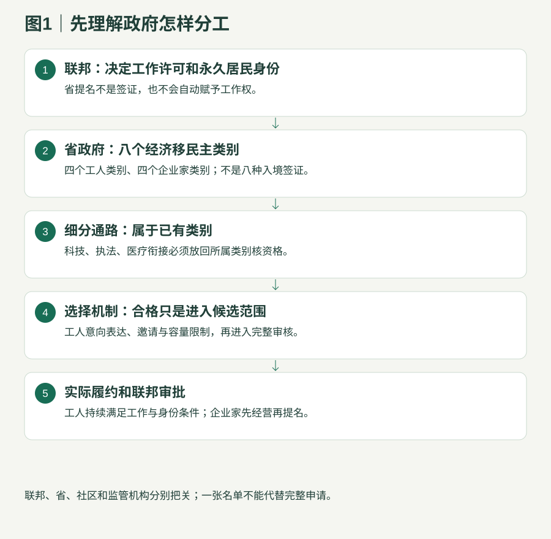
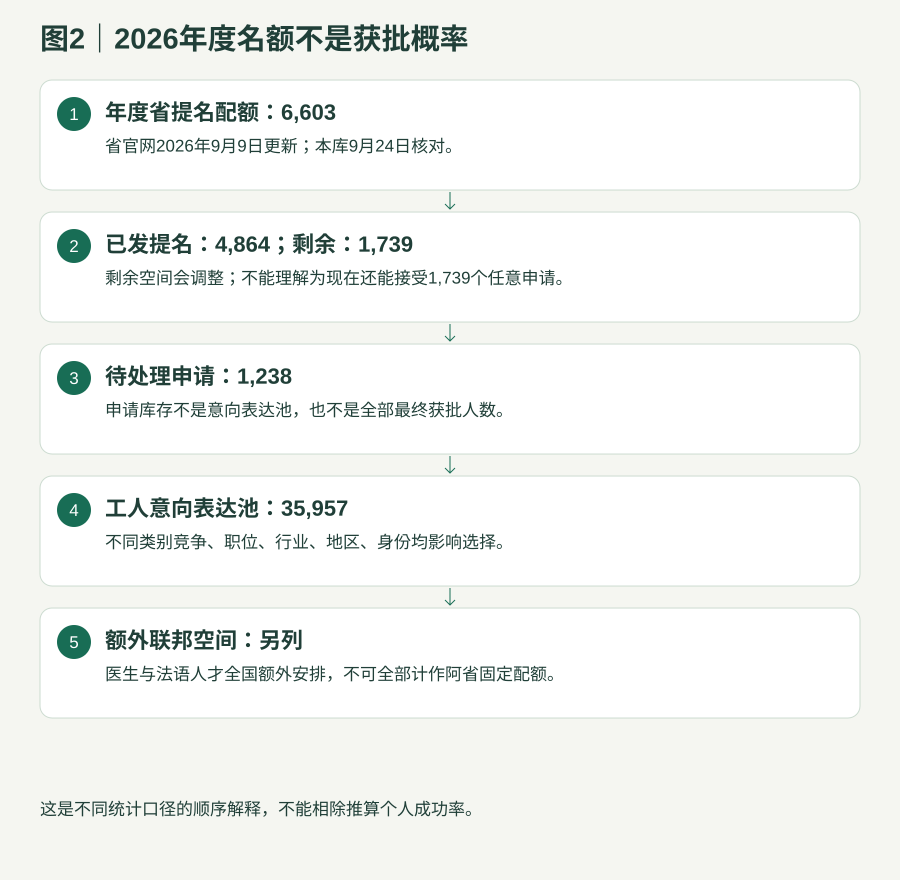

政府政策与留学路径研究
一 先看架构
先识别八个主类别，再理解子通路、年度名额和选择机制。
1.1 联邦、省、社区、执照：四个不同的决定

| 层级 | 实际负责什么 | 不能替代什么 |
|---|---|---|
| 联邦 | 工作与学习许可、联邦经济移民资格、最终永久居民审批与准入 | 省提名不能保证签证、体检/安全/犯罪审查结果 |
| 阿省政府 | 选择符合省需求的人、签发提名、符合条件时出工作许可支持信 | 支持信不是工作许可 |
| 指定社区 | 按本地劳动力需求审核雇主、职位及候选人，提供背书 | 社区背书不保证省邀请、提名或工作签证 |
| 监管机构 | 认定能否从事受监管工作，核学历、考试、语言、实习及执照 | 职业在移民清单不等于已经可以上岗 |
1.2 八个现行主类别
| 名称／层级 | 基本用途 | 产品理解与边界 | 官方 |
|---|---|---|---|
| 阿尔伯塔机会类别（Alberta Opportunity Stream） 工人主类别 | 已经在阿省合法工作；特定合格工签；当前职业与工作经验相符。 | 一般至少高中；语言按职业等级；不能从中国仅凭意向直接申请此类别。 | 阿尔伯塔机会类别资格 |
| 阿尔伯塔快速通道类别（Alberta Express Entry Stream） 工人主类别 | 先符合联邦经济移民，再符合阿省选择；最低综合排名分300不是获邀线。 | 下设科技、执法、医疗衔接等；重点行业不等于一个新的签证。 | 阿尔伯塔快速通道类别资格 |
| 乡村振兴类别（Rural Renewal Stream） 工人主类别 | 指定社区真实职位＋社区背书；境外申请者有机会，但职业等级受限制。 | 中国境内申请与阿省持有效工签申请的可用职业范围不同。 | 乡村振兴类别资格 |
| 旅游与酒店类别（Tourism and Hospitality Stream） 工人主类别 | 特定工签＋同一合格雇主至少6个月、780小时；18个合格职业。 | 仅读旅游课程或持毕业工签，不能直接满足本类别工签条件。 | 旅游与酒店类别资格 |
| 乡村企业家类别（Rural Entrepreneur Stream） 企业家主类别 | 乡村支持、经营/管理经历、净资产30万、投资10万、实际经营。 | 金额是加元最低资格门槛；不是买身份价格。 | 乡村企业家类别资格 |
| 毕业生企业家类别（Graduate Entrepreneur Stream） 企业家主类别 | 阿省合格高等教育至少2年、有效毕业工签、语言7级、至少34%股权。 | 要求实际经营；没有统一最低投资额也不代表零成本。 | 毕业生企业家类别资格 |
| 海外毕业生企业家类别（Foreign Graduate Entrepreneur Stream） 企业家主类别 | 近10年境外学位、指定机构推荐、创新商业方案、语言5级和投资。 | 指定机构评估、股权、商业运行与资金均需证明。 | 海外毕业生企业家类别资格 |
| 农场类别（Farm Stream） 企业家主类别 | 农业经营技能、至少50万净资产或可支配资金、至少50万股权投资。 | 投向阿省初级农业生产；须经过商业和农业可行性审查。 | 农场类别资格 |
1.3 当前容量：2026-09-09省官网快照

| 类别 | 配额 | 已发 | 剩余 | 库存 | 正在审理收到日期 |
|---|---|---|---|---|---|
| 机会类别 | 3562 | 2725 | 837 | 484 | 2026-06-17 |
| 乡村振兴 | 1057 | 673 | 384 | 95 | 2026-08-11 |
| 旅游与酒店 | 156 | 141 | 15 | 5 | 2026-07-27 |
| 专设医疗（两种衔接合计） | 518 | 310 | 208 | 27 | 2026-07-30 |
| 加速科技 | 619 | 447 | 172 | 176 | 2026-06-17 |
| 执法 | 12 | 少于10 | 未公布 | 少于10 | 按官网具体状态 |
| 重点行业及其他选择 | 619 | 527 | 92 | 230 | 2026-06-24 |
| 企业家合计 | 60 | 34 | 26 | 221 | 收到商业申请后评估 |
全省6,603个配额不含额外联邦医生/法语空间。全国“最多10,000”额外空间不是阿省独享；阿省额外已提名医生50人、法语12人。医生涉及31100、31101、31102且能在阿省执业；法语四项加拿大法语语言基准（Niveaux de compétence linguistique canadiens，NCLC） 5仍需满足省类别条件。阿省配额、库存与最新邀请
1.4 谁进入候选池，谁被选中
工人通道使用工人意向表达（Worker Expression of Interest，WEOI）：一个人只能有一个；与已有企业家意向表达或在处理/草稿省申请的限制分开核。一般有效12个月，更新信息不会自动续期。提交费135加元；最低语言4级只代表可提交意向，具体类别可能更高。工人意向表达、邀请及完整申请工人100分评分表原件省计划官方收费表
阿省未公布固定邀请日历。除了分数，还可以按职业、雇主行业、身份、地区等条件选择；最低获邀分数不能作为下一轮承诺。
| 观察指标 | 实际用途 |
|---|---|
| 2026年重点行业 | 医疗、科技、建筑、制造、航空、农业及指定乡村；并非全部各有独立签证。 |
| 候选池 | 机会22,381；医疗1,302；乡村1,750；旅游3,372；科技2,039；执法46；重点及其他5,067；合计35,957。 |
| 历史类别 | 旧战略招聘、雇主驱动等历史入口不作为现行新产品；以关闭类别官方页核历史记录。 |
1.5 最近十二次邀请：历史结果，不是下一轮保证
按2026-09-09更新页留存顺序列示；分数采用省工人意向表达100分体系，不是联邦综合排名分。完整年度表可在证据中心下载。
| 日期 | 类别／选择重点（官方名称） | 最低分 | 邀请数 |
|---|---|---|---|
| September 9, 2026 | Dedicated Health Care Pathway – Express Entry | 60 | 51 |
| September 3, 2026 | Alberta Express Entry Stream – Accelerated Tech Pathway | 60 | 96 |
| September 1, 2026 | Alberta Opportunity Stream | 56 | 575 |
| August 19, 2026 | Dedicated Health Care Pathway – non-Express Entry | 60 | 24 |
| August 14, 2026 | Alberta Opportunity Stream | 58 | 743 |
| August 12, 2026 | Dedicated Health Care Pathway – Express Entry | 60 | 57 |
| August 11, 2026 | Rural Renewal Stream | 51 | 127 |
| August 7, 2026 | Alberta Express Entry Stream – Priority Sectors (Agriculture) | 55 | 38 |
| August 6, 2026 | Alberta Express Entry Stream – Accelerated Tech Pathway | 60 | 95 |
| August 4, 2026 | Alberta Express Entry Stream – Priority Sectors (Health Care) | 66 | 50 |
| July 21, 2026 | Alberta Express Entry Stream – Priority Sectors (Construction) | 65 | 53 |
| July 16, 2026 | Alberta Express Entry Stream – Priority Sectors (Agriculture) | 56 | 29 |